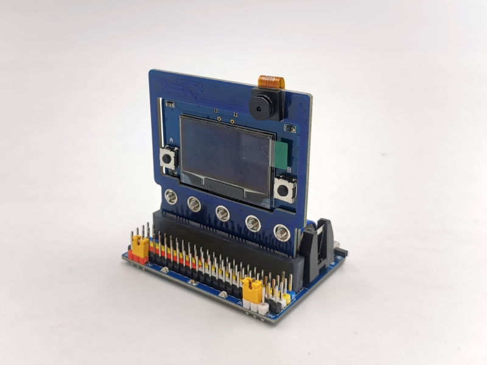
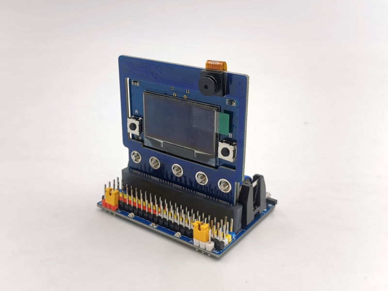

KSB060 IO 擴展板
簡介

KSB060 IO Board 它引出了micro:bit主板的全部IO腳位，並可以使用14500鋰電池供電以達到離線應用，蜂鳴器和RGB LED可以通過指撥開關來選用。最大的特色是IO 供電 分成2組 P0~P8 和 P9~P20，這2組可以分別選用3V / 5V ，以達到不同的模組供電需求。適用 micro:bit，PocketCard 。
產品規格
蜂鳴器 1個
RGB LED 2個
電源開關
5V / 3V IO電源選擇跳帽
指撥開關（蜂鳴器 和 RGB LED）
3排針IO腳位（P0~P20）
IIC腳位插座 4個
Micro USB 電源輸入
14500 電池座，可使用14500鋰電池供電
電源/充電/飽電 指示燈
樂高孔位
尺寸：60 x 47 x 19 mm
功能說明
板載鋰電池保護IC，鋰電池首次裝上時，請先插上USB線上電，否則會有不供電狀況
電源開關：僅對鋰電池和擴展板的USB供電有開關作用
電源：使用板載鋰電池供電，插USB線 到擴展板的USB座 可充電和供電，插USB線 到主板的USB座 可下載程式和供電
充電過程燈號顯示如下
| 燈號 | 作用 |
|---|---|
| 紅燈(充電指示燈)亮，綠燈(飽電指示燈)滅 | 充電中 |
| 紅燈滅，綠燈亮 | 充飽電 |
| 紅燈滅，綠燈滅 | 鋰電池擴展板有問題，請先排除故障原因 |
| 紅燈閃滅，綠燈亮 | 鋰電池沒有插上 |
蜂鳴器：板載蜂鳴器，使用P0腳位
RGB LED：2路全彩LED，使用P16腳位
基本範例
範例下載：選範例後再另存連結
範例一 蜂鳴器範例
打開瀏覽器連結 https://makecode.microbit.org/
指撥開關 的P0 撥到 ON
「 匯入 」-> 「Import File」 匯入 microbit-EX1_LED_BEEP.hex

Download完成，主板LED 會秀 “KSRobot” ，按 主板 A鍵 音樂響起
範例二 RGB全彩LED範例
指撥開關 的P16 撥到 ON
「 匯入 」-> 「Import File」 匯入 microbit-EX2_RGB_LED.hex
Download完成，按主板 A鍵 2 顆RGB LED 會同時出現不同顏色
按主板 B鍵 清除所有燈號
應用圖示
 
